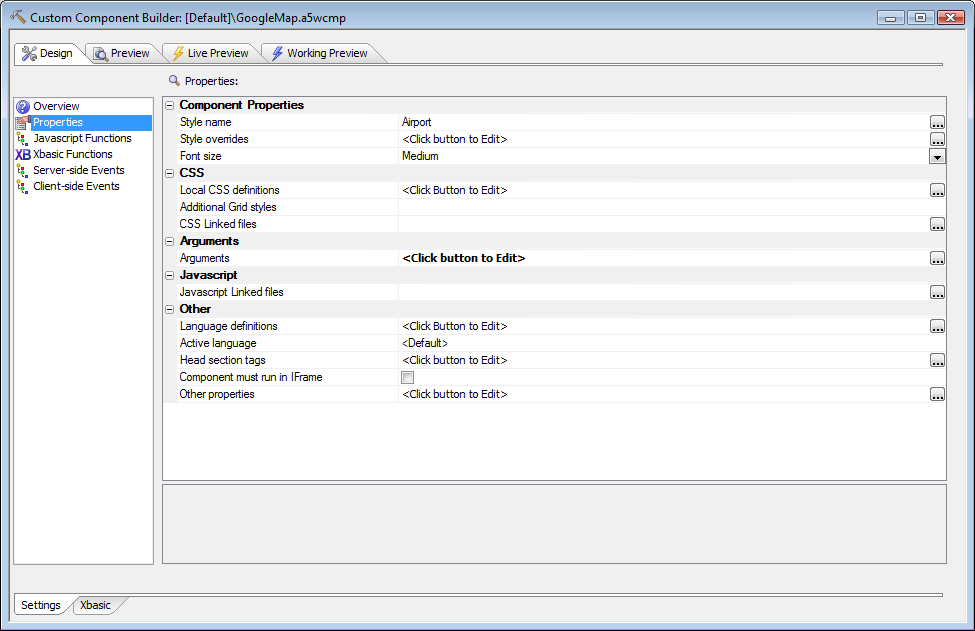
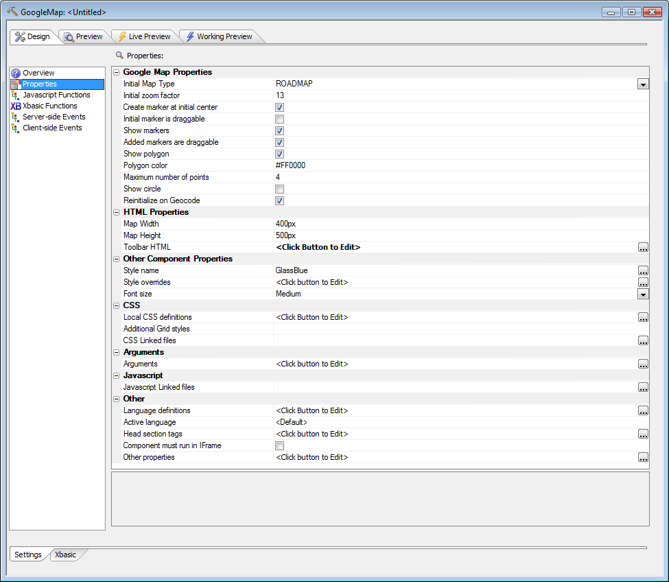

When to turn a Custom Component into a User-defined Component
In addition to the bindable arguments of a Custom Component, a User-defined Component has properties and supports having property grids for user input. Bindable properties make it possible to bind data to exposed properties programmatically, which in turn makes it possible to send the User-defined Component arrays of data or data generated from Xbasic expressions. Property grids, used widely in Alpha Five and prominent as the control panel for grid creation, make setting up the User-defined Component a matter of a few mouse clicks.Look at the user interface for a custom Map component:

That's rather generic: all the work is done in the argument binding dialog we saw above. Now compare that to the user interface for a user-defined Map component:

As you can see, all the generic properties of the Custom component are still there, only below the specific properties of the user-defined Map component.
Writing a user-defined component is not really possible until you have already built and debugged a custom component with essentially the same functionality. Questions to ask yourself before embarking on the writing of a user-defined component based on an existing custom component include:
- Will I need more than two variations of the custom component?
- Will many people need to use the component in varying ways?
- Will a property grid make configuring the component significantly easier?
- Will the component need properties as well as arguments?
- Would it make sense to offer this component for sale?
See also
User-defined Components V11When to turn a Custom Component into a User-defined Component V11
Creating a User-defined Component V11
Creating a Property Grid for a User-defined Component V11
Sharing and Using a User-defined Component V11